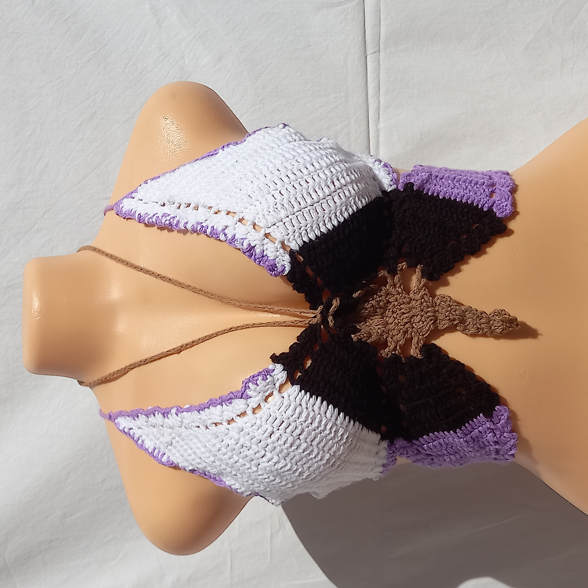

When Aesthetes G0 Into Fashion
Bralettes are a versatile garment that can be worn as both innerwear and outerwear. Available in a range of styles, from lacy and delicate to sporty and edgy, they offer a comfortable and fashionable alternative to traditional bras.
Unlike wired bras, bralettes are wire-free and feature minimal or no padding. This design creates a more natural breast shape and offers a lighter level of support. It's important to note that some bralettes may not provide enough support for larger busts, so it's important to choose a design that fits your body type...read more
see her page